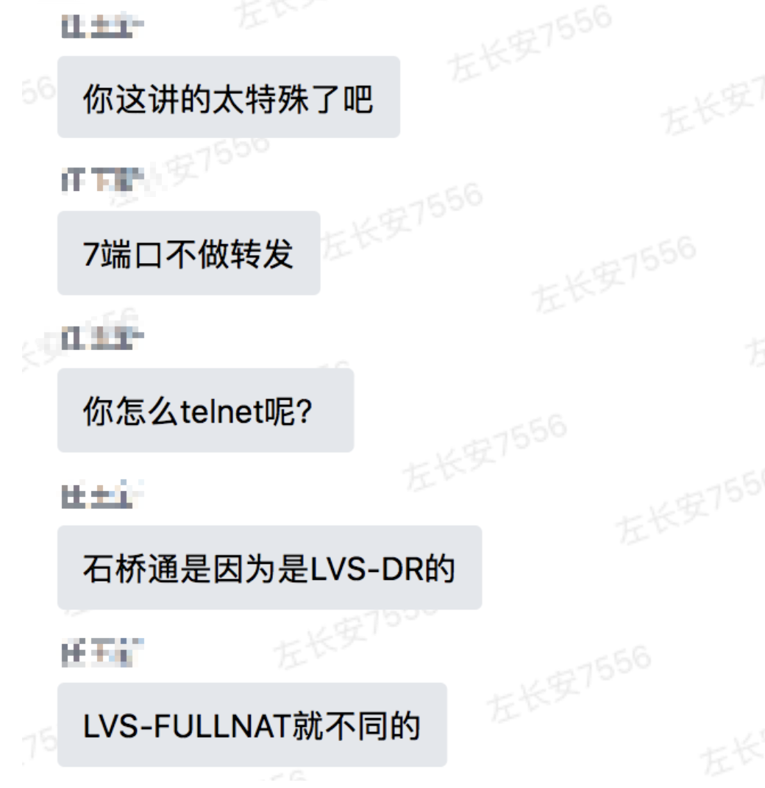

现象
用户的服务A依赖一个第三方服务B(服务A与服务B通过http域名进行交互),服务部署在C1,C2两个机房
C1机房的服务是可以正常启动的。
C2机房的服务启动后会报错，错误日志显示连接了一个错误的服务域名
代码分析
服务B中有如下一段问题代码
1 |
|
B服务会根据isProduct的返回值去连接不同的域名，即如果isProduct返回false就会连接测试环境的域名。
由于线上线下配置不同，B服务会返回错误的信息，进而导致服务A出错退出.
原因跟踪&分析
使用strace跟踪isReachable的底层表现
C1机房下的表现
1 |
|
C2机房下的表现
1 | strace -e trace=network,poll -f java A |
结果分析
从两个机房的跟踪结果可知，C1机房给出了明确的拒绝响应(能拒绝说明网络是可达的), 而C2机房却在等待3秒后超时了.
咨询运维两个机房的配置是否存在差异，答复如下:

不过问题是由lvs的模式差异造成还是配置造成，不得而知.
问题解决
由于运维不希望在LVS层做改动,所以问题由用户升级B服务版本解决.
总结
有些jdk的接口实现还是挺依赖环境的,底层环境稍有变动就会出现问题. 以后还是得注意.
java的isReachable实现逻辑
Inet4AddressImpl.c
Java_java_net_Inet4AddressImpl_isReachable0
1 |
|
1 |
|
root 账户下的现象
1 |
|
普通账户下的现象
1 |
|